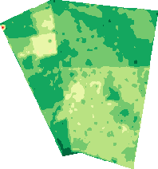
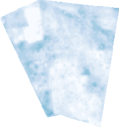
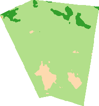
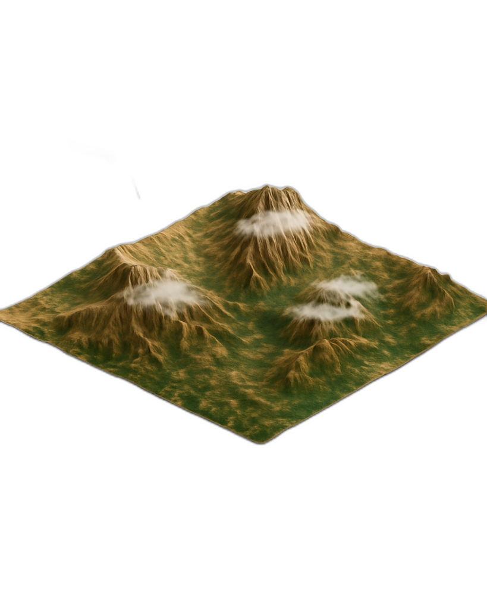

¿Listo para ir a la fija?
No arriesgue su plata. Conozca su terreno antes de invertir. Tome decisiones seguras con la información que le damos.
Le entregamos el reporte completo del pasado de su terreno. Sepa si su finca se inunda, si es seca o si es buena para el cultivo. Tome decisiones seguras y proteja su inversión.
Usamos tecnología para que usted conozca su finca como la palma de su mano, sin complicaciones.

Vea qué tan verdes y sanas estuvieron las plantas en el pasado. Detectamos problemas que no se ven a simple vista mirando la historia del lote.
Nada de gráficos enredados. Le mostramos la información clara y sencilla para que entienda rápidamente qué pasó en su terreno.
Vea cómo se comportó el clima en su zona. ¿Llovió mucho? ¿Hubo sequía? Entienda el clima de su finca para planear mejor.
Descubra si su terreno sufre de sed frecuentemente. El satélite nos dice la humedad de las plantas para que sepa dónde regar.
Lleve el control de todos sus lotes y cultivos en un solo lugar. Tenga la información de sus siembras siempre a la mano.

Vea su terreno como si estuviera volando sobre él. Recorra su finca en 3D y ubíquese mejor en el mapa.
Precios justos para el campo colombiano. Saber lo que pisa antes de sembrar es la mejor inversión.
50 – 100 hectáreas
1 año de historia · Entrega en 1–3 días
Ejemplo: 80 ha → $560.000
Solicitar Estudio100 – 300 hectáreas
1 año de historia · Entrega en 1–3 días
Ejemplo: 200 ha → $1.100.000
Solicitar Estudio+300 hectáreas
Cotización personalizada y gratuita
Le armamos un plan a la medida de su operación
Pedir Cotización¿Tiene menos de 50 hectáreas? Escríbanos — le hacemos cotización personalizada sin costo.
🔒 Pagos seguros con Mercado Pago, Nequi, Daviplata o transferencia bancaria.
Estas son imágenes reales extraídas de informes que hemos entregado. Cada mapa le cuenta la historia de su terreno.

NDVI
Salud Vegetal
¿Qué tan verdes y sanas están las plantas?

NDMI
Estrés Hídrico
¿Le falta o le sobra agua al terreno?

SAVI
Cobertura del Suelo
¿Cuánto suelo está cubierto por vegetación?
Cada color cuenta una historia. ¿Quiere ver un ejemplo completo?
Ver Ejemplo de Informe Gratis
Estudios del pasado para asegurar su inversión hoy, y pronto vigilancia día a día.
Revisamos qué ha pasado en su finca años atrás. Ideal si va a comprar tierra, arrendar o sembrar en un lote nuevo.
Artículos prácticos sobre agricultura satelital y tecnología para el campo colombiano.
Descubra por qué entender la historia de su terreno es la única forma de dejar de perder dinero.
El costo invisible de trabajar a ciegas en el agro colombiano.
Qué es el NDVI y cómo este índice le dice la salud exacta de sus plantas.
Solo necesitamos la ubicación de su lote (coordenadas, punto en Google Maps o dirección). No necesita instalar nada ni ir al terreno. Nosotros hacemos todo el trabajo con imágenes satelitales.
La generación del informe es casi inmediata. Le entregamos en 1 a 3 días hábiles después de confirmar el pago y recibir las coordenadas. Ese margen nos permite revisar la calidad de los datos y asegurar que todo esté perfecto antes de enviar.
Sí. Usamos imágenes de los satélites Sentinel-2 (Agencia Espacial Europea) y Landsat (NASA), las mismas fuentes que usan gobiernos e instituciones científicas en todo el mundo.
Aceptamos Mercado Pago (pago seguro con tarjeta, PSE o efectivo), Nequi, Daviplata y transferencia bancaria. El pago se hace antes de iniciar el análisis. Si por alguna razón técnica no podemos generar el informe, le devolvemos el 100% de su dinero.
Sí. Analizamos cualquier terreno agrícola en Colombia: plátano, arroz, palma, café, maíz, ganadería, etc. Los satélites cubren todo el territorio nacional.
Recibe una solución completa para tomar mejores decisiones sobre su terreno: mapas satelitales a color que le muestran exactamente dónde están los problemas y las fortalezas, gráficos de evolución temporal, datos climáticos históricos y recomendaciones concretas en lenguaje claro. Todo organizado en un documento profesional que se lo enviamos por WhatsApp y correo. Es como tener un diagnóstico médico de su finca: usted sabe qué tiene, dónde y qué hacer al respecto.